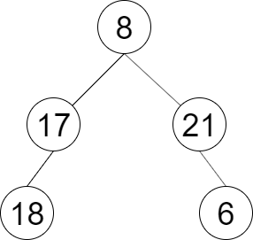

剑指 Offer 32 - III. 彩灯装饰记录 III
BFS 逐层走，入队永远从左到右；偶数层（第 2、4…层）整层反转再收进答案。
思路
for (int i = queue.size(); i > 0; i--)一次吃掉一整层：此刻队列里正好是当前层的全部结点。level始终按弹出顺序（左到右）装，方向只用一个布尔leftToRight记：偶数层Collections.reverse(level)整层反转。- 每层处理完把
leftToRight取反；孩子照常左先右后入队，为下一层做准备。
图解
最优解
1import java.util.*;2 3class Solution {4 public List<List<Integer>> decorateRecord(TreeNode root) {5 if (root == null) return new ArrayList<>();6 List<List<Integer>> ans = new ArrayList<>();7 Queue<TreeNode> queue = new ArrayDeque<>();8 queue.add(root);9 boolean leftToRight = true;10 while (!queue.isEmpty()) {11 List<Integer> level = new ArrayList<>();12 // 一次吃掉一整层：此刻队列里正好是当前层的全部结点13 for (int i = queue.size(); i > 0; i--) {14 TreeNode node = queue.poll();15 level.add(node.val);16 if (node.left != null) queue.add(node.left);17 if (node.right != null) queue.add(node.right);18 }19 // 入队始终从左到右，偶数层（第 2、4…层）整层反转即可20 if (!leftToRight) Collections.reverse(level);21 ans.add(level);22 leftToRight = !leftToRight;23 }24 return ans;25 }26}题目
一棵圣诞树记作根节点为 root 的二叉树，节点值为该位置装饰彩灯的颜色编号。请按照如下规则记录彩灯装饰结果：
- 第一层按照从左到右的顺序记录
- 除第一层外每一层的记录顺序均与上一层相反。即第一层为从左到右，第二层为从右到左。
示例 1：

输入：root = [8,17,21,18,null,null,6] 输出：[[8],[21,17],[18,6]]
提示：
节点总数 <= 1000
题面取自力扣当前版本。
数据快照 2026-11-04。题面版权归力扣所有，本站点仅供本人学习使用，请勿对外发布。